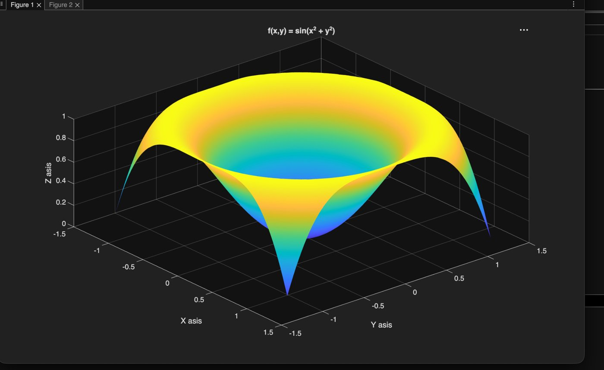
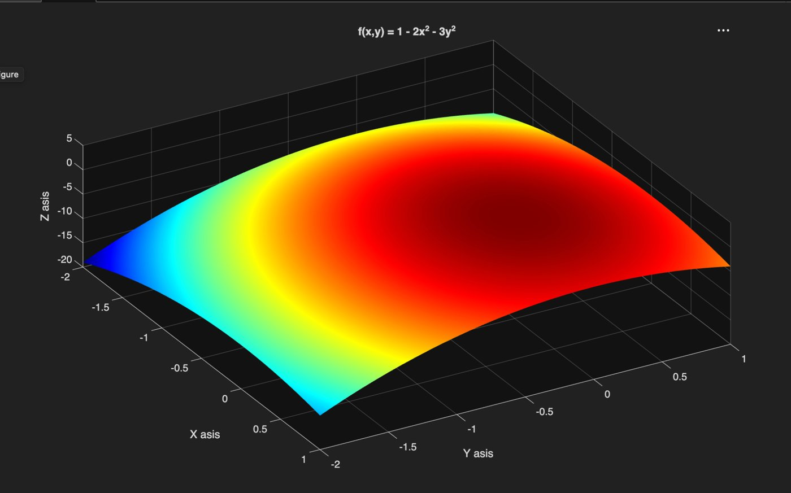
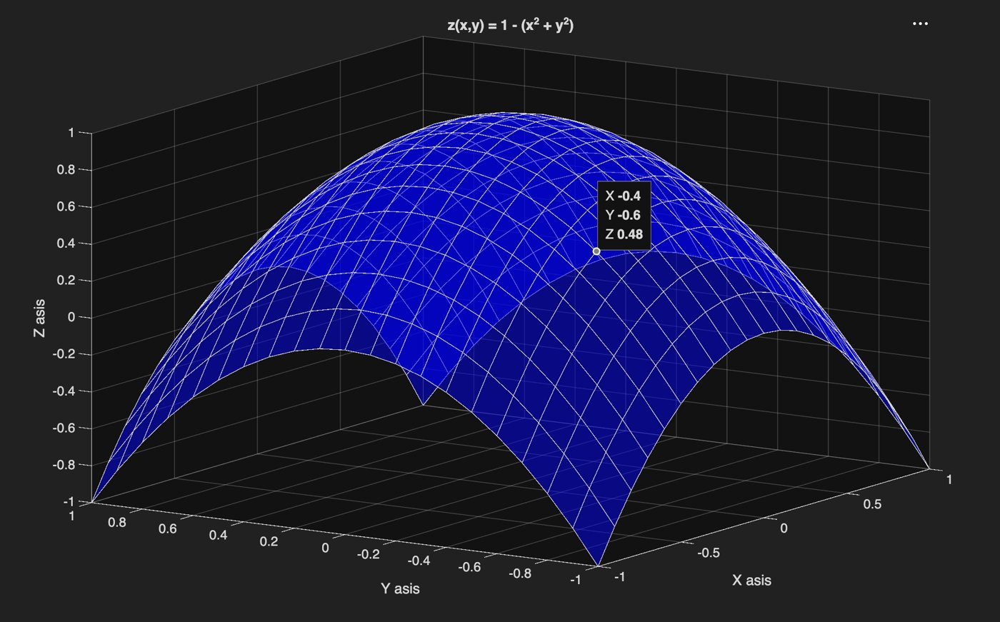

Sinusinis trimatis paviršius
LD4 – f(x,y) = sin(x² + y²). Trimatė funkcija su spalvų perėjimais ir pasirinktu žiūrėjimo kampu.
MATLAB / 4 LDVILNIUS TECH studentas Dirbtinio intelekto sistemos
Domiuosi dirbtiniu intelektu, programavimu ir naujomis technologijomis. Čia pristatau savo studijas, patirtį bei mokomuosius projektus.
Sužinoti daugiauTrumpai apie mano kryptį ir pomėgius.
Studijuoju VILNIUS TECH ir mokausi programavimo, duomenų analizės bei dirbtinio intelekto pagrindų.
Man svarbu suprasti, kaip veikia technologijos, ir pritaikyti naujas žinias praktinėse užduotyse. Kartu kaupiu klientų aptarnavimo patirtį.
Miestas: Vilnius
Studijos: VILNIUS TECH
Technologijos, kurias šiuo metu mokausi taikyti.
Skriptai, matricos ir grafikai
Interneto svetainių pagrindai
Algoritmų programavimo pagrindai
Projektų failų saugojimas
Studijos, profesinė patirtis ir mokomieji darbai.
Vilnius
Mokausi programavimo, matematikos, algoritmų ir dirbtinio intelekto sistemų pagrindų.
Programavimas ir duomenų vizualizacija
Kuriu MATLAB skriptus, analizuoju signalus ir braižau 2D bei 3D grafikus.
Vilnius
Aptarnauju pirkėjus, dirbu su savitarnos kasomis ir sprendžiu kasdienius klientų klausimus.
Mano MATLAB 4 laboratorinio darbo 3D grafikų pavyzdžiai.

LD4 – f(x,y) = sin(x² + y²). Trimatė funkcija su spalvų perėjimais ir pasirinktu žiūrėjimo kampu.
MATLAB / 4 LD
LD4 – f(x,y) = 1 − 2x² − 3y². Žemyn atvertas paviršius, kuriame didžiausia reikšmė centre.
MATLAB / 4 LD
LD4 papildoma užduotis – z(x,y) = 1 − (x² + y²). Mėlynas paviršius su skaidrumu.
MATLAB / 4 LDMokomieji technologijų ir programavimo paslaugų pavyzdžiai.
Pateiktos orientacinės, mokomojo projekto kainos, o ne oficialus pasiūlymas.
| Paslauga | Aprašymas | Kaina |
|---|---|---|
| Asmeninės svetainės maketas | HTML ir CSS pagrindu kuriamas vieno puslapio svetainės pavyzdys. | 100 € |
| Duomenų vizualizacija | MATLAB grafikų paruošimas mokomiesiems duomenims. | 35 € |
| Programavimo pradmenų konsultacija | Paprastų algoritmų, kodo ir darbo aplinkos paaiškinimas. | 20 € |
Informacija apie mano gyvenamą vietovę ir profesinius interesus.
Vilnius, Lietuva